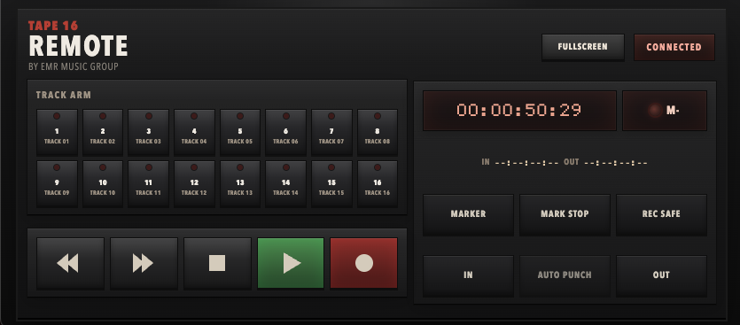

Fixed 16-track layout
Start instantly with the same dependable track layout every time, plus clear metering. All on one screen, no need to change windows constantly. You can set templates within the layout.

DAW Tape Workflow
A decisive 16-track tape workflow for modern sessions.
Punch in quickly, commit takes, and keep momentum with transport-first recording. Print it. Commit it.
Try now: TAPE 16 with a 7 day demo.
Start instantly with the same dependable track layout every time, plus clear metering. All on one screen, no need to change windows constantly. You can set templates within the layout.
Recording behaves like tape: punch in, overwrite, and move forward. NO UNDO means you commit the part or re-record it if it is not working. Less time editing, more time playing your instruments and staying in the performance.
Record your MIDI synths like real synths. What you play gets printed: audio only.
A focused tape-style workflow that keeps you making decisions by sound, not by endless visual edits.
Combine the old with the new: shape tracks with your favorite plugins in a hands-on tape workflow.
Shape your sound with wow, flutter, saturation, tape age, and damage controls while keeping operation quick and tactile.
Tape Mods
Use tape mods to push the sound from clean to worn with wow, flutter, saturation, tape age, and damage controls. It is a quick way to add character without slowing the session.
Tape Workflow
TAPE 16 is a tape DAW and tape machine DAW for users searching for a digital tape machine, virtual tape machine, reel to reel recorder, or 16-track recorder for DAW writing. It keeps you recording with a transport-first workflow and a commit-first approach to sessions.
Remote Control
Open the new phone remote web app in a browser to arm tracks, drop markers, toggle rec safe, and run transport controls from any device.

Workflow
TAPE 16 keeps you focused on recording decisions. Arm a track, hit transport, capture the take, and keep moving.
Minimum Requirements
Pricing
Launch special pricing for the full license.
$59 $29 USD
One-time purchase with full recording workflow and export options.
Secure checkout. Your serial is delivered automatically after purchase.
Buy For $29Sign in with your serial, order ID, and purchase email to view and manage activations.